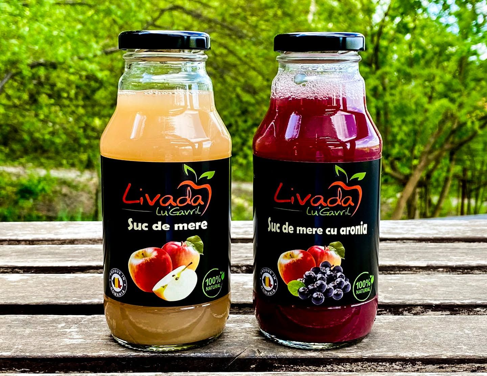
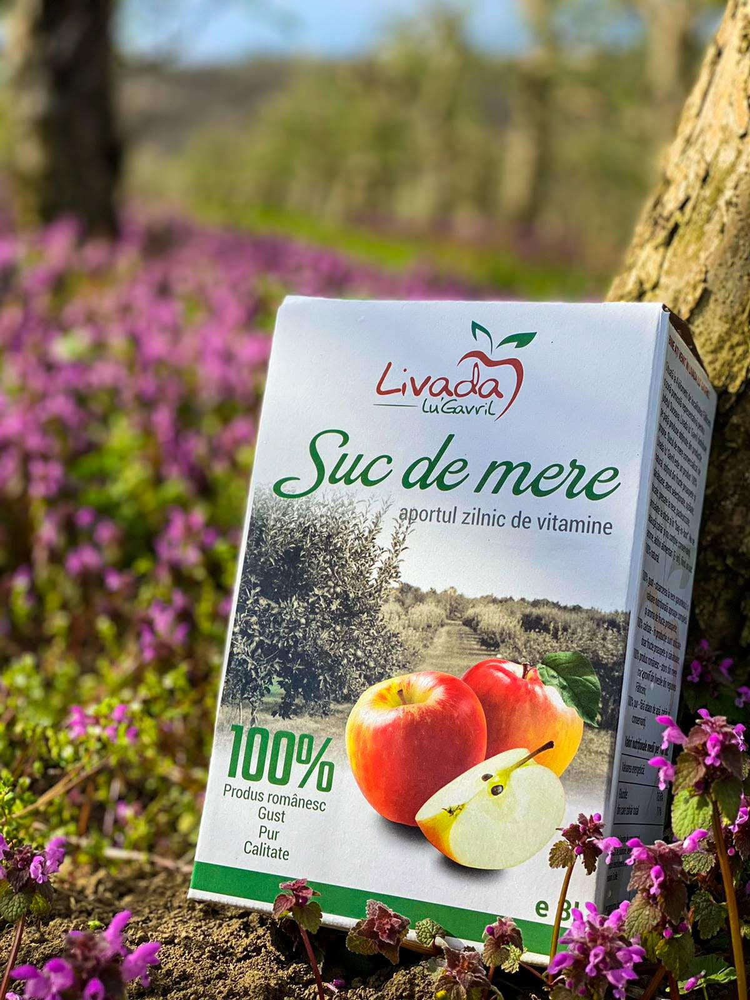
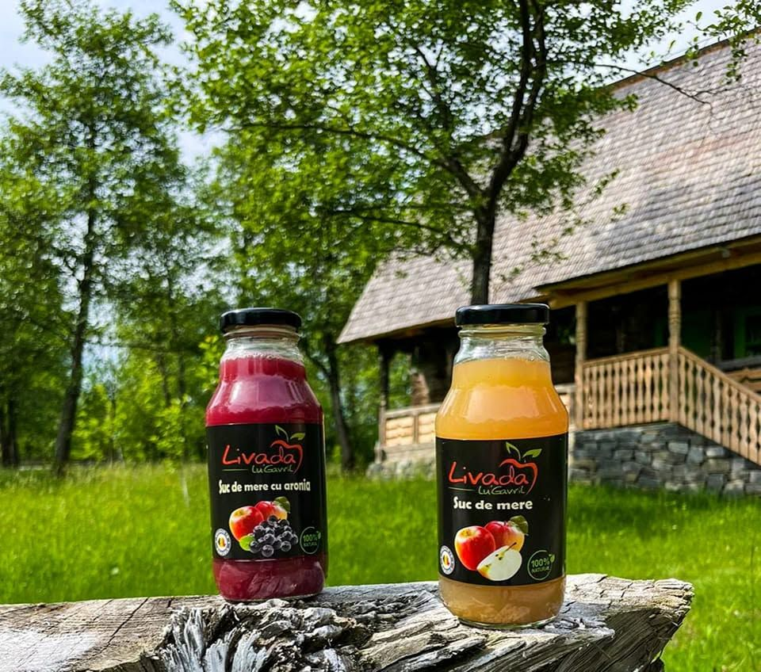
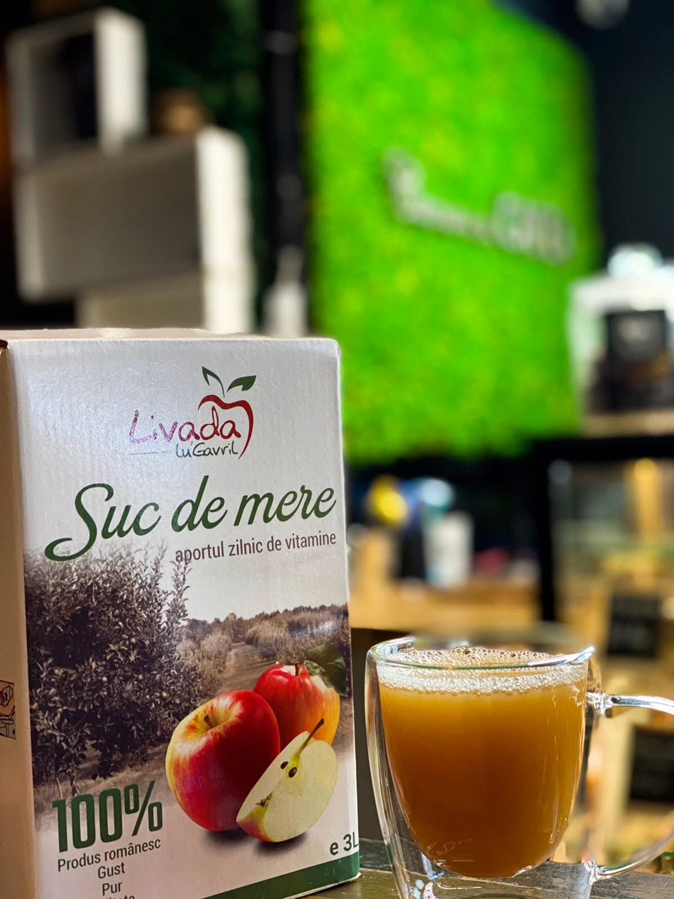
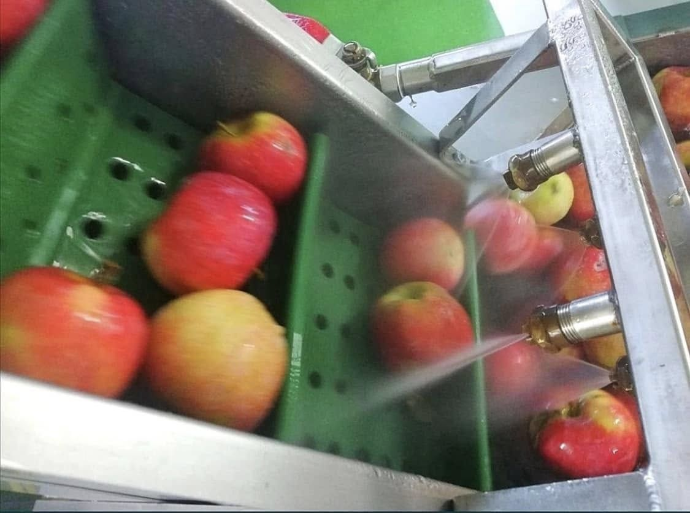
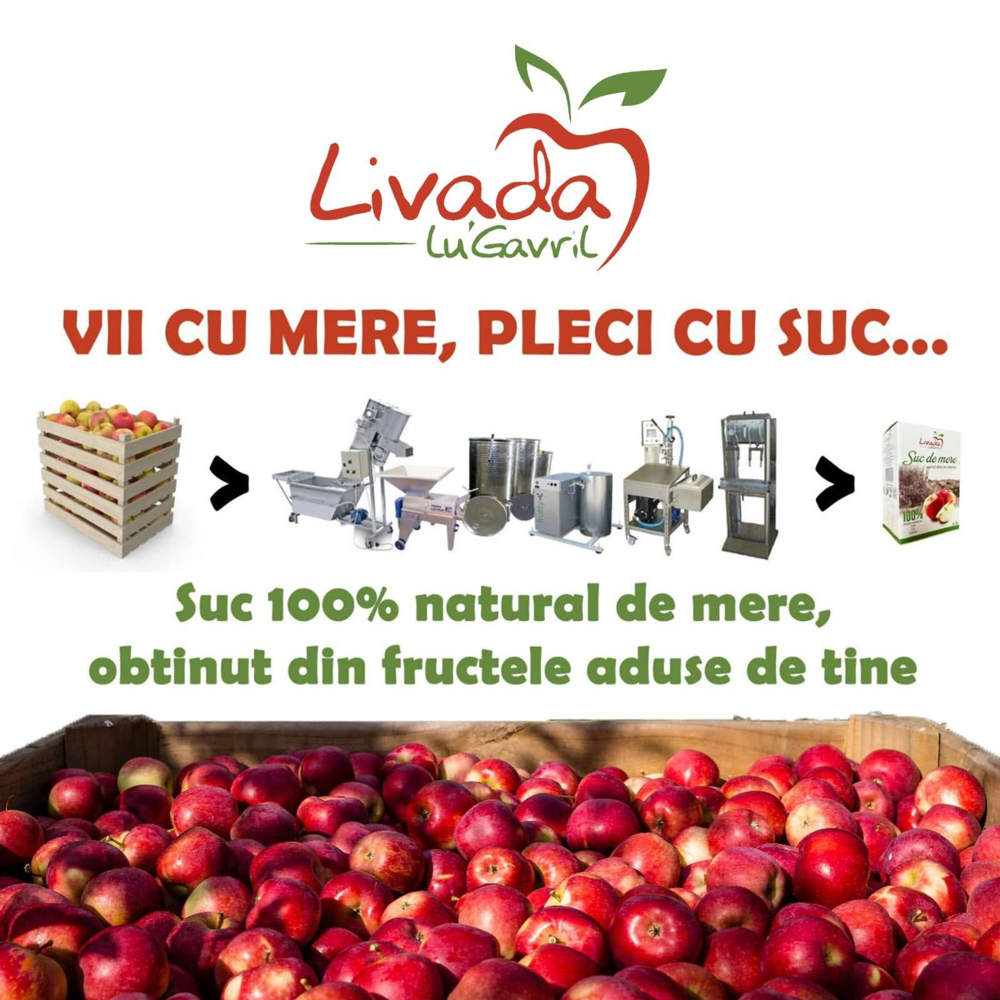
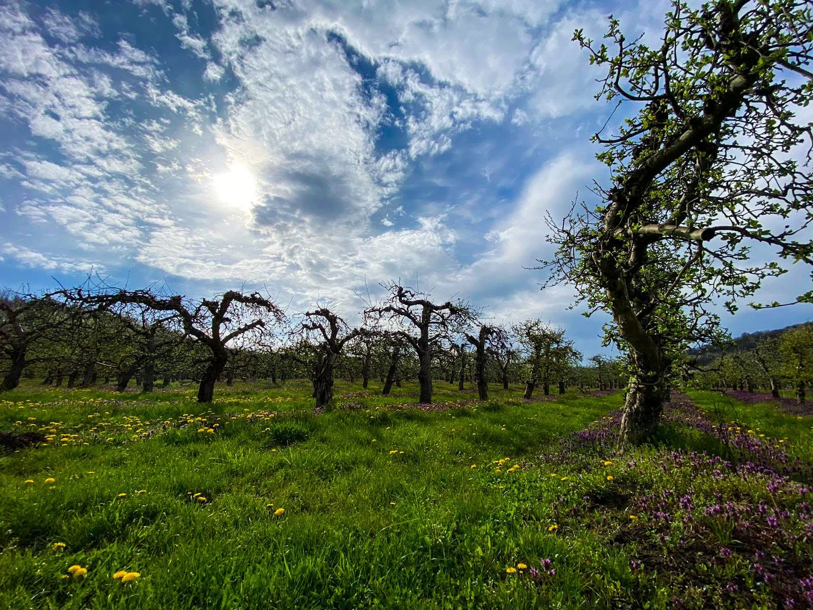
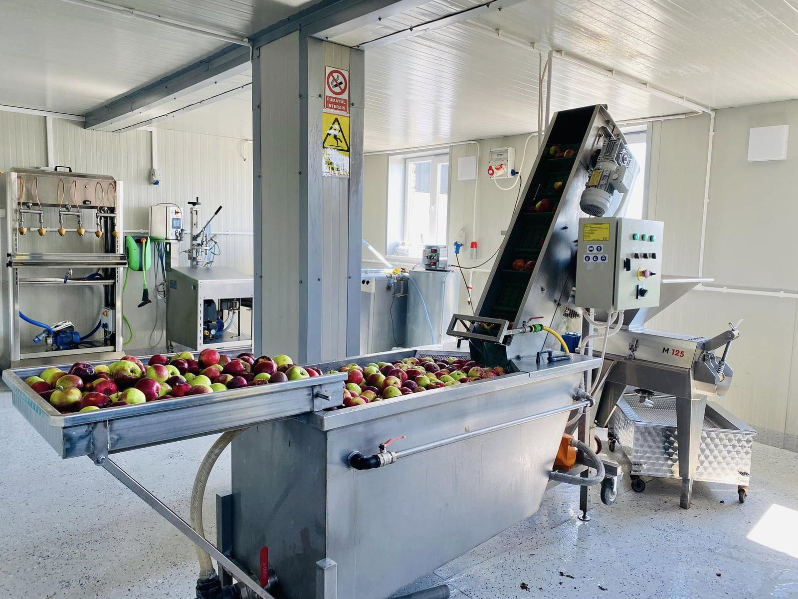

Ediție limitată
Pachet 12 borcane de dulceață fără zahăr
6 borcane de dulceață de caise și 6 de cireșe. Fără zahăr, fără conservanți.
179,00 lei14,92 lei / borcan
Detalii →
Suc de mere și suc de mere cu aronia, făcut în micuța noastră fabrică din Leucușești. Fără zahăr adăugat, fără conservanți, fără arome. La sticlă sau în cutie de 3 litri cu robinet.
G 5,0 ★★★★★ · 25 de recenzii pe Google

Două gusturi, două formate. Sticla pentru o pauză, cutia de 3 litri pentru toată familia.
6 borcane de dulceață de caise și 6 de cireșe. Fără zahăr, fără conservanți.


Livada e a noastră, fabrica e a noastră. Merele ajung din pom în sticlă pe drumul cel mai scurt.

Totul începe primăvara, în livada din Leucușești, cu florile de măr și cu grija pentru fiecare pom.

Culegem merele când sunt coapte și le aducem la fabrica de lângă livadă.

Merele sunt spălate și sortate pe bandă. Doar fructele bune ajung la presat.

Presăm la rece și îmbuteliem imediat, la sticlă sau în pungi vidate Bag-in-Box.

Livada Lu Gavril e o afacere de familie din Leucușești, lângă Fălticeni. Avem grijă de livadă tot anul, culegem merele și le presăm chiar noi, în fabrica de lângă livadă.
Lucrăm cu echipamente moderne și ținem la curățenie ca la propria bucătărie. Fiecare sticlă și fiecare cutie trec prin mâinile noastre înainte să ajungă la tine.

Adu-ne merele tale și le transformăm în suc 100% natural, ambalat în cutii Bag-in-Box. Sucul e făcut doar din fructele tale.







Poți ridica comanda direct de la fabrică sau poți veni să cumperi pe loc.
| Luni – Vineri | 08:00 – 19:00 |
| Sâmbătă | 08:00 – 16:00 |
| Duminică | Închis |